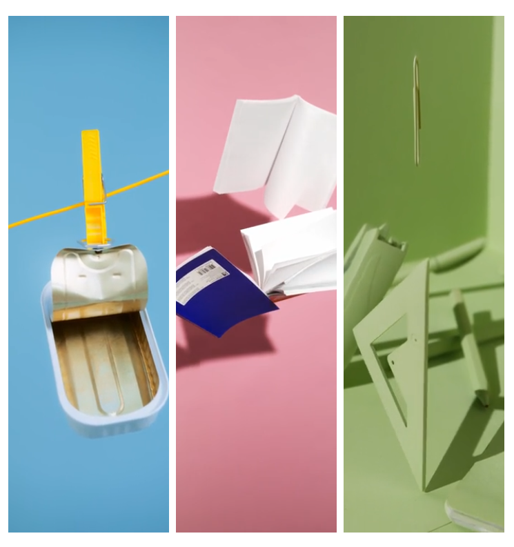

Design addicted
A stylish UI Kit
for all web creatives
Zero is a Webflow Ecommerce and CMS UI kit including several carefully designed page layouts.

Zero Design
Includes a total of 10 static pages, divided like this: 4 Landing pages, 2 About pages, 2 Contact page, 1 Team page, 1 FAQ page. In addition to these, there are Webflow CMS driven pages: Blog (in 2 variations), Shop (in 2 variations), Works and Careers. All with their respective single pages!
4 LANDING
2 ABOUT
3 CONTACT